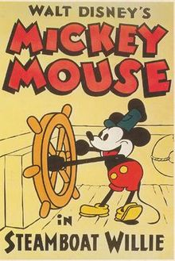
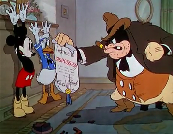
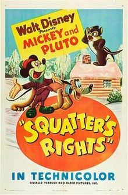
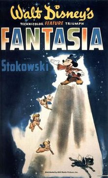
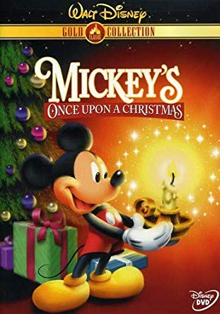
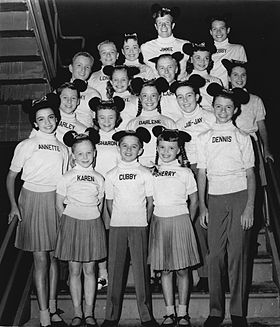

Short Films
 Steamboat Willie was released in 1928 and was directed by Walt Disney and Ub Iwerks. It was produced in black-and-white by Walt Disney Studios and was released by Celebrity Productions. The cartoon is considered the debut of Mickey Mouse and his girlfriend, Minnie. Mickey, piloting a steamboat, delights Minnie by making musical instruments out of the menagerie on deck.
The Karnival Kid, also known as Carnival Days, is a 1929 American animated short film directed by Walt Disney and Ub Iwerks. It was produced in black and white by The Walt Disney Studio and it's the first film in which Mickey speaks. The Karnival Kid is broken into two distinct segments. The first segment features Mickey selling hot dogs at a carnival. The second segment is set later that night and features Mickey, accompanied by two cats, in a moonlight serenade.
The Band Concert is a 1935 American animated short film produced in 3-strip Technicolor by Walt Disney Productions and released by United Artists. The film was the first Mickey Mouse film produced in color and remains one of the most highly acclaimed of the Disney shorts. The story is about a small music band conducted by Mickey Mouse which struggles through a distraction-filled public performance.
 Moving Day is a 1936 American animated short film produced by Walt Disney Productions and released by United Artists. The cartoon, set during the contemporary Great Depression, follows the antics of Mickey Mouse, Donald Duck, and Goofy as they frantically pack their belongings after being dispossessed from their home. The film was directed by Ben Sharpsteen and includes the voices of Walt Disney as Mickey, Clarence Nash as Donald, Pinto Colvig as Goofy, and Billy Bletcher as Sheriff Pete.
Symphony Hour is a 1942 American animated short film produced by Walt Disney Productions and released by RKO Radio Pictures. The cartoon depicts Mickey Mouse conducting a symphony orchestra sponsored by Pete. The film was directed by Riley Thomson and features music adapted from the Light Cavalry Overture by Franz von Suppé. The voice cast includes Walt Disney as Mickey, Billy Bletcher as Pete, and John McLeish as a radio announcer.
 Squatter's Rights is an animated short film produced in Technicolor by Walt Disney Productions and released to theaters on June 7, 1946 by RKO Radio Pictures. The cartoon is about a confrontation between Pluto and Chip and Dale, who have taken up residence in Mickey Mouse's hunting shack. In 1947, it was nominated for an Academy Award for Best Animated Short Film at the 19th Academy Awards.
The Simple Things is a 1953 animated short subject produced by Walt Disney Productions. Released by RKO Radio Pictures on April 18, 1953, the short is notable as the final regular entry in the Mickey Mouse theatrical cartoon series. In this cartoon, Mickey and Pluto go fishing.
Mickey's Christmas Carol is a 1983 American animated featurette produced by Walt Disney Productions and released by Buena Vista Distribution. It was directed and produced by Burny Mattinson. The cartoon is an adaptation of Charles Dickens' A Christmas Carol, starring Scrooge McDuck as Ebenezer Scrooge. Many other Disney characters, primarily from the Mickey Mouse universe, Robin Hood, and The Adventures of Ichabod and Mr. Toad, were cast throughout the film.
Get a Horse! is a 2013 American 3D animated slapstick comedy short film, produced by Walt Disney Animation Studios. Combining black-and-white hand-drawn animation and color CGI animation, the short features the characters of the late 1920s Mickey Mouse cartoons, and features archival recordings of Walt Disney in his posthumous role as Mickey Mouse. It is the first original Mickey Mouse theatrical animated short since Runaway Brain, and the first appearance of Oswald the Lucky Rabbit in a Disney animated production in 85 years.
Full-length Films
 Fantasia is a 1940 American animated film produced by Walt Disney and released by Walt Disney Productions. With story direction by Joe Grant and Dick Huemer, and production supervision by Ben Sharpsteen, it is the third Disney animated feature film. The film consists of eight animated segments set to pieces of classical music conducted by Leopold Stokowski, seven of which are performed by the Philadelphia Orchestra. Music critic and composer Deems Taylor acts as the film's Master of Ceremonies, providing a live-action introduction to each animated segment.
A Goofy Movie is a 1995 animated musical comedy drama film, produced by Disney MovieToons and Walt Disney Television Animation and distributed by Walt Disney Pictures. The film is based on The Disney Afternoon television series Goof Troop created by Mike Peraza, and acts as a follow-up to the show. Taking place several years after the events of Goof Troop, A Goofy Movie follows Goofy and his son, Max, who is now in high school, and revolves around the father-son relationship between the two as Goofy takes Max on a fishing trip out of fear that Max is drifting away from him, unintentionally interfering with Max's social life, particularly his relationship with Roxanne, his high school crush.
 Mickey's Once Upon a Christmas is a 1999 direct-to-video animated Christmas anthology film produced by Walt Disney Video Premieres and won the Award for Best Animated Feature Film at the 5th Kecskemét Animation Film Festival in 1999. The video features Mickey Mouse, Minnie Mouse, Pluto, Pete, Goofy, Max, Donald Duck, Daisy Duck, Huey, Dewey, and Louie, Scrooge McDuck, Mortimer Mouse, Figaro the Kitten and Chip 'n' Dale with cameos by Owl, Clarabelle Cow, Horace Horsecollar, and a Beagle Boy. The film comprises three separate segments, with narration by Kelsey Grammer.
Fantasia 2000 is a 1999 American animated film by Walt Disney Feature Animation and Walt Disney Pictures, and released by Buena Vista Pictures. Produced by Roy E. Disney and Donald W. Ernst, it is the 38th Disney animated feature film and the sequel to Fantasia. Like its predecessor, Fantasia 2000 consists of animated segments set to pieces of classical music. Celebrities including Steve Martin, Itzhak Perlman, Quincy Jones, Bette Midler, James Earl Jones, Penn & Teller, and Angela Lansbury introduce each segment in live action scenes directed by Don Hahn.
Mickey's Twice Upon a Christmas is a 2004 American computer-animated direct-to-video fantasy comedy anthology film produced by DisneyToon Studios and with animation production by Blur Studio and Sparx Animation France. It is a direct-to-video sequel to Mickey's Once Upon a Christmas. This direct-to-video feature is presented in five segments and includes Mickey Mouse, Minnie Mouse, Pluto, Goofy, Max, Donald Duck, Daisy Duck, Huey, Dewey, and Louie, and Scrooge McDuck. Along with the Mickey's PhilharMagic theme park attraction, this production was one of the first to depict the Mickey Mouse characters with 3D computer animation. It is the final direct-to-video film to feature both Wayne Allwine and Alan Young, who both died in different years.
Television Specials
 The Mickey Mouse Club is an American variety television show that aired intermittently from 1955 to 1996 and returned in 2017 to social media. Created by Walt Disney and produced by Walt Disney Productions, the program was first televised for four seasons, from 1955 to 1959, by ABC. This original run featured a regular but ever-changing cast of mostly teen performers. ABC broadcast reruns weekday afternoons during the 1958–1959 season, airing right after American Bandstand. The show was revived three times after its initial 1955–1959 run on ABC, first from 1977–1979 for first-run syndication as The New Mickey Mouse Club, then from 1989–1996 as The All-New Mickey Mouse Club (also known to fans as MMC from 1993–1996) airing exclusively on cable television's The Disney Channel, and again in 2017 with the moniker Club Mickey Mouse airing exclusively on internet social media. Mickey Mouse himself appeared in every show not only in vintage cartoons originally made for theatrical release but also in opening, interstitial, and closing segments made especially for the show. In both the vintage cartoons and new animated segments, Mickey was voiced by his creator, Walt Disney.
Disney's House of Mouse is an American animated television series, produced by Walt Disney Television Animation (now Disney Television Animation), that originally aired for three seasons from 13 January 2001, to its finale on 24 October 2003. The show focuses on Mickey Mouse and his friends running a cartoon theater dinner club in the fictional Toontown, catering to many characters from Disney cartoons and animated movies while showcasing a variety of their cartoon shorts. The animated series is a spin off of the popular short-lived Disney series Mickey Mouse Works, and features many Mouse Works shorts as well as a selection of brand new shorts.
Mickey Mouse Clubhouse is an American interactive computer-animated children's television series which aired from May 5, 2006 to November 6, 2016. The series, Disney Television Animation's first computer-animated series, is aimed at preschoolers. Bobs Gannaway, the Disney veteran who created it, is also responsible for other preschool shows, such as Jake and the Never Land Pirates and for Disneytoon Studios films including Secret of the Wings, The Pirate Fairy, and Planes: Fire & Rescue.
Mickey and the Roadster Racers is an American computer-animated children's television series produced by Disney Television Animation. It is a spin-off of Mickey Mouse Clubhouse. The series debuted on Disney Junior and Disney Channel in the United States on January 15, 2017. Mickey and the Roadster Racers is about the Sensational Six (Mickey, Minnie, Goofy, Donald, Daisy and Pluto) as they race around their town of Hot Dog Hills and around the world.